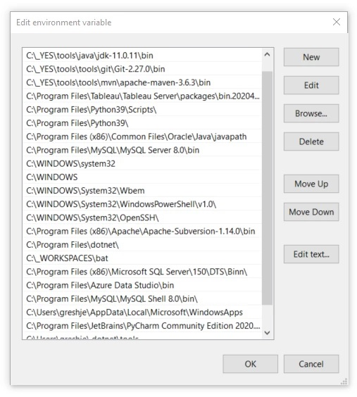
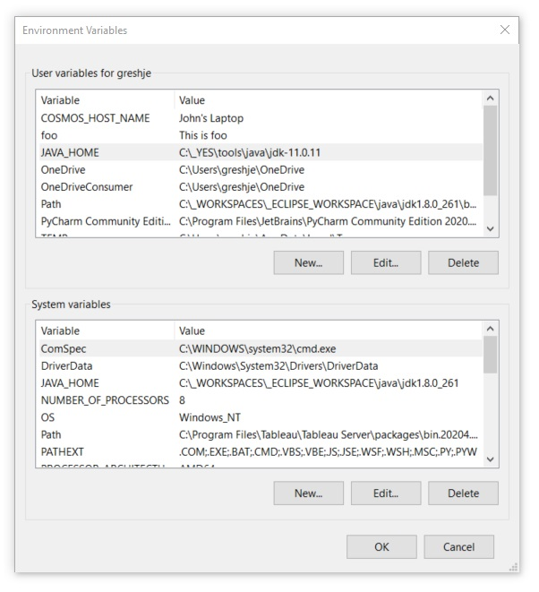

IDE (Eclipse): Install a Fully Automated, Fully Featured Eclipse Environment
This how-to describes how to install a fully configured and fully featured Eclipse environment.
This environment can be installed by simply downloading a single zip file and unzipping it on your local machine.
This install is for Windows.
This Install includes the following
- Eclipse
- Git and Git Integration
- Maven and Maven Integration
- Wildfly and Wildfly Integration
- Lombok and Lobmok Integration
Download and Install the Eclipse IDE and Integrations:
Yaorma Eclipse Suite (YES)
The entire YES Eclipse environment can be downloaded as a single zip from Google Docs (curlewconsulting@gmail.com):
https://drive.google.com/drive/folders/1txmjzHY4B-W0A5VkdF3soBLWNKqoChwS?usp=sharing
Click
here to download directly from here.
When you click the link, you will get a message similar to the following. Click the Download link to get the zip file.
After the zip file has downloaded, extract it to the root dir of your C: drive
(or install to a location of your choice and create a logical link C:\_YES to that location using something like mklink /D C:\_YES D:\path\to\_YES).
Configure Your Environment
To ensure a consistent environment, we have included as many of the dependencies as is practical.
You may already have some of these paths/settings configured and they don't need to be changed.
However, it is recommended to use these settings to ensure as much consistency as possible.
Configure the Path Environment Variable
Add the following to the beginning of your path
- C:\_YES\tools\java\jdk-11.0.11\bin
- C:\_YES\tools\git\Git-2.27.0\bin
- C:\_YES\tools\mvn\apache-maven-3.6.3\bin

Configure the JAVA_HOME Environment Variable
Add the following JAVA_HOME environment variable
- C:\_YES\tools\java\jdk-11.0.11

Configure the Git SSL Certificate
Open a cmd window and execute the following command to configure ssl for git and github access using git.
git config --system http.sslcainfo "C:\_YES\tools\git\Git-2.27.0\mingw64\ssl\certs\ca-bundle.crt"
Launch Eclipse
To launch Eclipse, navigate to C:\_YES folder and double click the Eclipse Shortcut.
When Eclipse launches, you should see the HelloWorld class of the HelloWorld application included with the install.
There might be errors for the Lombok annotations. Run the Maven build
(right click on the hello-world project on the left, select Maven->Update Project)
to refresh the project and these errors should resolve.
To run the hello-world Java application, right click anywhere on in the white space of the HelloWorld.java window
and select Run As->Java Application
Next Steps: Install, Run, and Debug a Web Application in Eclipse
Click on the link below to get to the how-to that will show you how to download source code for a web application and run and debug that web application locally.
Install, Run, and Debug a Web Application in Eclipse